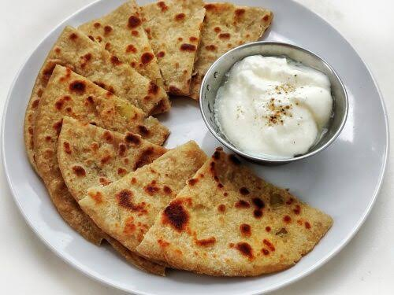

Aloo paratha with curd is a famous North Indian comfort meal. It features a hot, golden-brown whole wheat flatbread stuffed with spiced mashed potatoes, cooked crisp with ghee, and paired with a bowl of cool, creamy, and tangy yogurt (curd).
The following are the steps to cook this yummy dish: